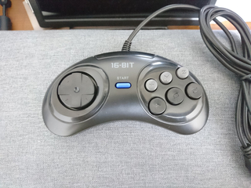

メガドライブ用ゲームパッドをMSXで利用可能にする改造 〜その２〜 (2020年8月1日現在)
※FS-A1GTの高速モードでは正常に機能しないことを確認。調査中。
JoyMegaは 6Bパッドにも対応しています。セガ純正の3Bパッドは斜めに入りやすくてゲームによっては使いにくい。
MSX側に対応ソフトは少ないですが、SofaRun を使うと JoyMega の各ボタンに機能を割り当てることが出来ます。
うまく使えば便利に使える。
ということで、6Bパッドが欲しくなってきたわけですが、さすがにメガドライブもすでに貴重なモノ。
いくら中古で安価に入手できたとしても、改造するのは気が引けるし、
ゲームパッドは手に触れる部分なのでやっぱり新品が良い。
探してみると、AliExpressにて、メガドライブ互換の6Bパッドが売られているのを発見しました。
しかも、送料込みで500円前後と非常に安価です。早速注文してみました。

中華製の互換パッドですが、よく出来ていてホールド感も良いです。
ただ、残念なのは、裏側が割れていました(泣
輸送中に重いモノを載せられてしまったのか、元々割れてるモノを送りつけてきたのかはわかりませんが、
まぁ、Aliなので、そういうこともあるでしょうし、500円なので気にしないことにします。
操作性が気に入ったら、もう一個買って、改造済みの中身を新しい外装に入れ替えれば良いだけです。
では、改造を始めたいと思います。
外装を外すと下記写真のようになっています。
もじゃもじゃといろんな色のケーブルがありますが、どの色が D-SUB9pinのどこに繋がっているのか、調べる必要があります。
（中の線材の被服の色は規格で定められているわけではないので、モノによって色が変わっているかもしれません。）
調べたところ、D-SUB9pinのピン番号と、基板上のケーブルが半田付けされている位置の対応関係は下記のようになりました。
番号が D-SUB9pinのピン番号です。見づらいかもしれませんが、向かって左から7, 5, 3, 4, 6, 9, 1, 2, 8 ですね。
これを踏まえて、配線を書き加えたのが下記です。抵抗は 10kΩ。トランジスタは 1815 です。
[PDF]
この中華パッド、小さな IC 1個で作られてるので、小さい 6Bパッドの中にも多少隙間があります。
この隙間に部品を押し込めます。部品は下記と配線材のみ。
[前へ][次へ]